ACADEMIC FOUNDATION이학사
경희대학교
물리학과
수학·물리의 원리를 이해하고,
게임의 움직임을 코드로 구현합니다.
UNITY / GAME & VR / CLIENT ENGINEERING
물리학을 전공한 게임 클라이언트 개발자 박우영입니다.
수학·물리 지식으로 당구의 충돌·마찰·스핀을 구현하고,
Unity 게임·VR의 시스템과 상호작용으로 확장해 왔습니다.
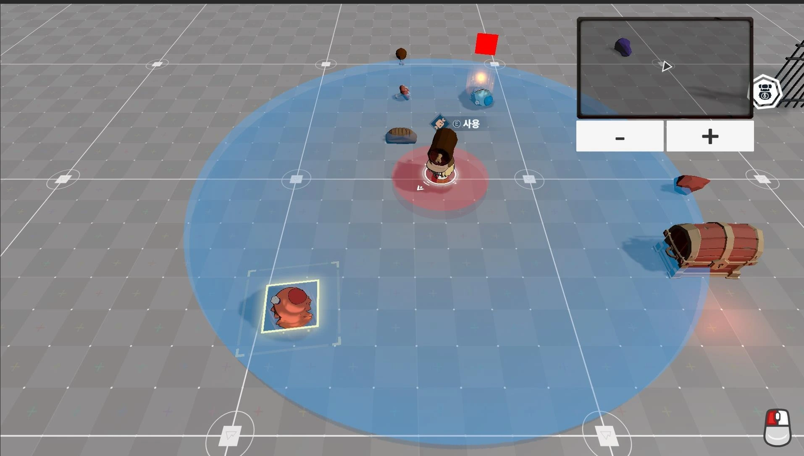
원리를 이해하고,
움직임으로 완성합니다.
01 / BACKGROUND & EXPERIENCE
물리학 전공부터 게임 개발 교육,
게임·VR 클라이언트 실무까지.
EDUCATION / 학력 · 교육
수학·물리의 원리를 이해하고,
게임의 움직임을 코드로 구현합니다.
생성형 AI 기반 게임콘텐츠 개발 실무 과정
C++·블루프린트 기반 게임 제작
C++ · 자료구조/알고리즘 · STL · 게임 수학
Windows API · 게임 서버
CAREER / 실무 경력
Meta Quest의 상호작용과 멀티플레이 동기화
Project T 클라이언트 시스템과 초기 개발 환경 구축
기획 1명 · 아트 1명 · 클라이언트 3명의 팀 프로젝트. 회사 프로젝트는 공개 가능한 담당 시스템 중심으로 기술했습니다.
02 / SELECTED WORK
무엇을 만들었는지,
어떤 판단을 했는지 함께 보여드립니다.
Billiards는 대학 캡스톤과 후속 개인 개선, Project T는 재직 중 담당한 팀 프로젝트, Fighter Tap은 개발 중인 1인 프로젝트입니다.
물리학 전공 지식을 게임으로 옮긴 3인 팀 당구 시뮬레이션입니다. PM과 주요 프로그래밍, 물리 이론 조사를 맡아 공의 이동·마찰·충돌·회전·스핀과 득점 판정을 구현했습니다. 팀 프로젝트 종료 후 메뉴·화면 크기 설정을 개인 작업으로 개선했습니다.
위치·속도는 2차원, 스핀은 3차원 벡터로 관리했습니다. 구의 관성모멘트 I = (2/5)mr²와 내적·외적을 사용하고, 접촉점 속도 v + ω × r을 기준으로 벽 충돌 후 속도와 회전 상태를 갱신했습니다.
충돌 후 겹침이 남은 다음 프레임에 충돌 응답이 반복되는 것을 확인했습니다. 공의 쌍마다 카운터를 두고 충돌 직후 3프레임 동안 재처리를 건너뛰어 반복 반응을 완화했습니다.
arccos 변환의 범위 때문에 스핀 방향이 원하는 대로 나오지 않는 문제를 다뤘습니다. 정규화한 방향 벡터 성분으로 입력을 게임 공간의 스핀으로 변환해 방향을 일관되게 처리했습니다.
목적구 접촉과 쿠션 횟수를 기록하고 모든 공이 멈춘 뒤 한 번만 점수·턴을 판정합니다. 이후 충돌 기록과 입력 상태를 초기화하고, 메뉴·플레이·설정의 실행 흐름을 모듈로 나눴습니다.
물리 수식과 코드를 직접 다룬 학습·구현 경험입니다. 충돌 프레임 건너뛰기는 반복 응답을 완화하는 방식이며, 정밀 물성이나 모든 속도에서의 충돌 안정성을 보장하지 않습니다.
Billiards 상세 PDF ↓GitHub 소스 ↗MIDO Studio 창립 멤버로 기획 1명, 아트 1명, 클라이언트 3명과 개발한 회사 프로젝트입니다. 아웃게임 데이터 구조, 인벤토리·상호작용·입력과 AI 제작 도구를 구현하고, 초기 협업 환경과 자동 빌드 흐름을 구성했습니다.
Domain–Repository–Manager–UI로 계층을 나누고 PlayerDataStore의 로드와 RuntimeManager의 변경·저장 흐름을 구성했습니다. Dirty Flag로 저장 필요 여부를 관리하고, C# 이벤트로 필요한 UI만 변경을 구독하도록 했습니다.
Google Sheets 데이터를 POCO로 변환해 사용했습니다. 장비·소비재·재료 구조, 정렬·필터·합치기를 구현하고 인게임에 가져갈 데이터는 Snapshot으로 전달했습니다.
IInteractable과 독립 컴포넌트로 Hold·Throw·Give 행동을 조합했습니다. GraphView 기반 Behavior Tree 에디터와 활성 노드 하이라이트를 개발하고 UniTask로 Tick 주기와 비동기 흐름을 구성했습니다.
Profiler·Memory Profiler로 병목과 GC Alloc을 점검하고 풀링·레이캐스트 분산·Canvas 분리를 적용했습니다. Player/UI 입력 분리, PC·모바일 입력 추상화와 Jenkins 플랫폼별 예약 빌드 환경도 구성했습니다.
회사 프로젝트의 공개 가능한 담당 시스템만 소개합니다. 대표 이미지는 상호작용 테스트용 Unity Editor 장면이며 완성 게임의 출시 화면이 아닙니다.
Project T 수록 포트폴리오 PDF ↓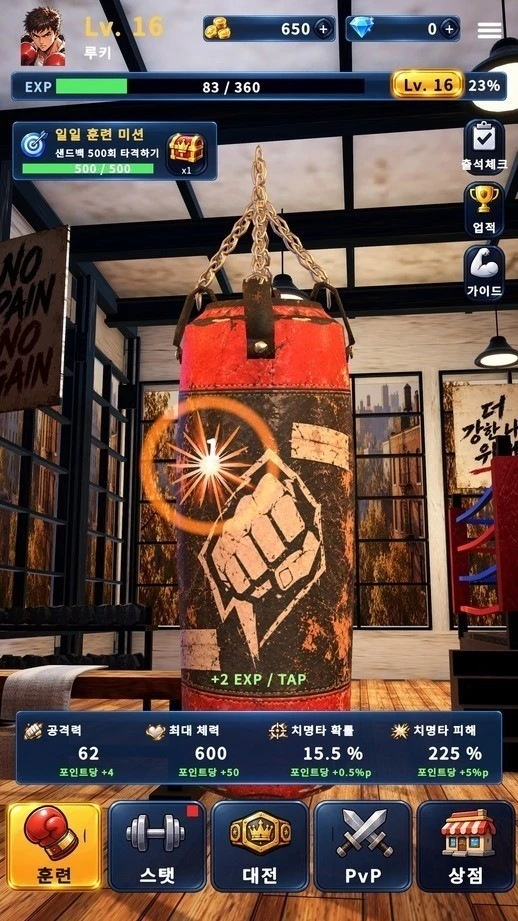
훈련과 스탯 투자, NPC 도전과 LAN 대전을 연결하는 1인 개발 게임입니다. 기획·클라이언트부터 AI 아트의 에셋화, 3D 환경·물리 반응·연출 통합을 담당했습니다.
FishNet 서버가 탭 간격·성장 수치·피해·라운드를 검증하고 SyncVar·ObserversRpc로 전달합니다. 첫 승리 보상의 중복 지급을 막고 패배 후 기존 성장을 보존하도록 규칙을 분리했습니다.
임시 파일 작성 후 교체하고 백업을 남깁니다. 손상 원본을 보관하고 유효한 백업을 복원하며, 미래 버전 데이터는 덮어쓰지 않도록 처리했습니다.
AI 레퍼런스, UModeler X, Blender를 거쳐 샌드백을 62,800삼각형에서 3,208개로 줄였습니다. 5본 리그에 Rigidbody·ConfigurableJoint를 연결하고 타격 위치의 임펄스로 반응시킵니다.
게임 이벤트로 VFX·피해 숫자·카메라 반응을 연결하고 unscaled time을 사용합니다. VFX 8개 슬롯을 재사용하며 중단 시 잔상·오디오·카메라 화각을 정리합니다.
렌더러·삼각형은 에셋 구성 수치이며 FPS 향상 측정값이 아닙니다. 물리는 격리된 Editor PhysX 검사 기준이고, LAN 2기기 종합 검증과 모바일 실기 성능 측정은 남아 있습니다. 시작 월은 최초 커밋 기준입니다.
코드의 구조부터 작업 전후 화면까지.Billiards 개별 PDF, Project T 수록 포트폴리오, Fighter Tap의 AI 활용 자료를 다운로드할 수 있습니다.
Fighter Tap · AI 활용 PDFMORE PROJECTS / 기초에서 협업으로
Ability 기반 플레이어 구조, 키보드·게임패드 리바인딩, Mirror 생성·회수 및 Queue 기반 네트워크 풀링을 구현했습니다.
2025.07 — 08 · 클라이언트 5명낙하 전투 환경과 보스 패턴, Shader Graph·VFX를 담당했습니다. 곡사 탄환의 경유 위치 문제를 Hermite 보간으로 다뤘습니다.
2025.05 — 06 · 4인 팀건물 설치·업그레이드·UI를 구현했습니다. 거리 기반 활성화를 위해 int로 고정된 우선순위 큐를 제네릭 구조로 수정했습니다.
2025.04 · 4인 팀ML-Agents의 관찰·행동 계약, Ability 기반 이동·밀치기, 동시 탈락 판정과 시각 피드백을 구현했습니다. 모델 학습은 동료 AI 개발자 담당입니다.
2026.06 — 진행 중 · 2인 개발C++·Win32 API·GDI+로 타일 맵 편집·저장 도구와 더블 버퍼링, FSM 기반 화면 전환·전투 UI를 구현했습니다.
기획 1명 · 클라이언트 1명JellyMelt와 공용 저장 구조, 스토리 그래프 편집기, 사운드·광고 및 AI UI 자산 통합을 담당했습니다. 기획 도구부터 플레이 UI까지 연결했습니다.
2026.04 — 진행 중 · 3인 개발INTERLUDE / A LITTLE PLAY
직접 눌러 보고, 흐름을 따라가 보세요.
제가 다루는 문제들을 작은 모션으로 풀었습니다.
화면을 누르면 그 방향으로 공이 움직입니다.
Project T의 계층 구조에서 출발한 모션입니다.
포트폴리오의 물리·시스템 주제를 웹으로 재해석한 개념 모션입니다. 실제 게임의 실행 화면과 구현 상세는 프로젝트에서 확인할 수 있습니다.
03 / HOW I BUILD
물리학에서 배운 모델링과 논리적 사고를 게임 개발에 적용합니다. 아이스하키 선수 활동에서 익힌 책임감과 팀 적응력으로, 기획·아트·개발의 요구를 나누고 맡은 작업을 끝까지 이어갑니다.
Ability, 상태와 조건 평가, Domain/Repository 구조로 책임을 구분합니다. 입력 주체와 네트워크 권한, 비동기 작업의 수명까지 함께 살핍니다.
스토리 그래프, Behavior Tree 에디터, 데이터 연동과 자동 빌드까지. 게임 기능과 함께 반복 작업을 줄이고 변경 내용을 확인할 수 있는 도구를 만듭니다.
콘셉트를 만드는 데서 끝내지 않고 UI 자산 분리, 메시·재질 정리, 플랫폼별 표현 비용과 검증으로 이어갑니다. 직접 맡은 범위와 도구의 도움을 구분해 설명합니다.
Profiler의 병목, 에셋 구성 수치, 같은 조건의 전후 비교를 근거로 판단합니다. Editor 검증과 실기 성능, 구현과 아직 남은 검증을 구분합니다.
04 / TAKE A CLOSER LOOK
이력서부터 기술적 판단의 과정까지.
필요한 자료를 PDF로 받아보세요.
LET'S BUILD THE NEXT PLAY.
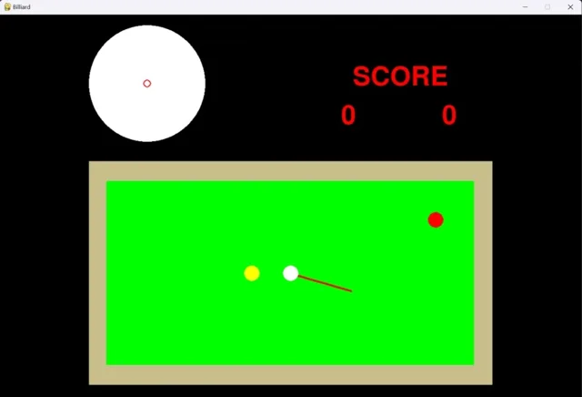
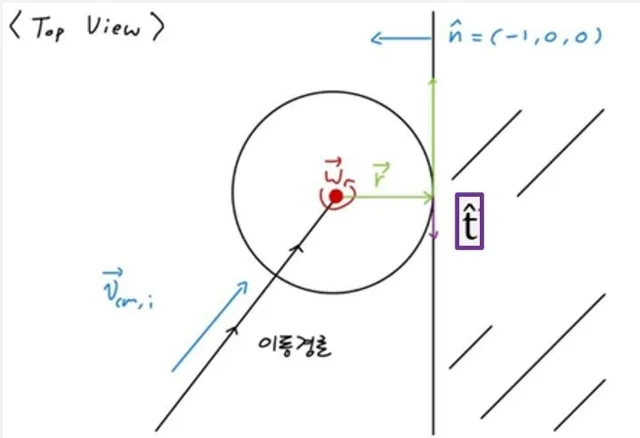
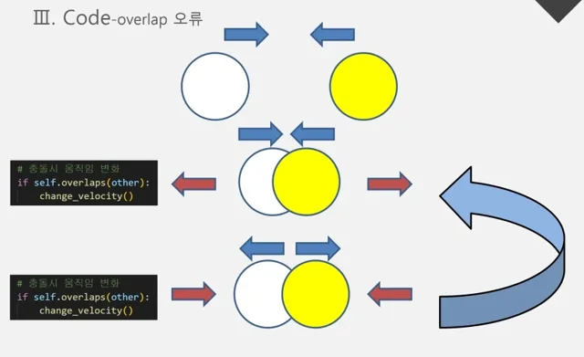
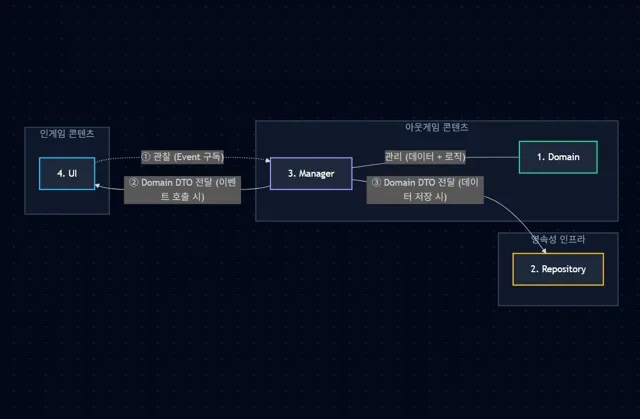
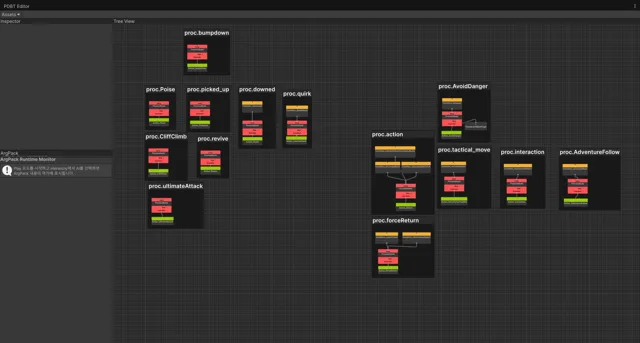
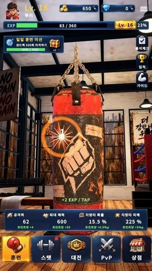
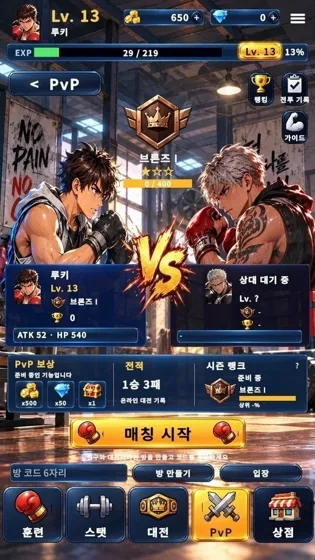
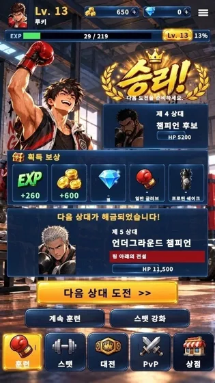
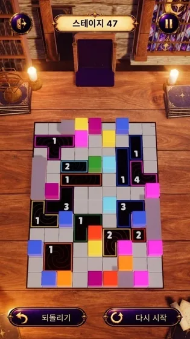
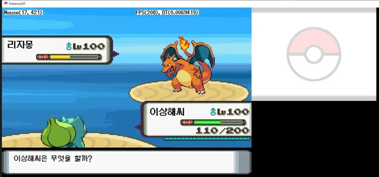
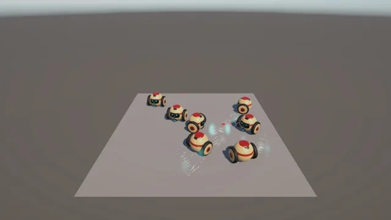
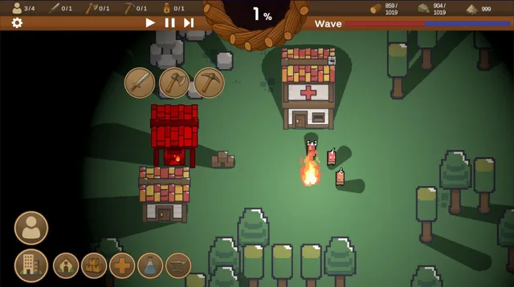
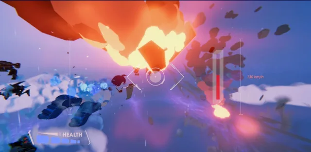
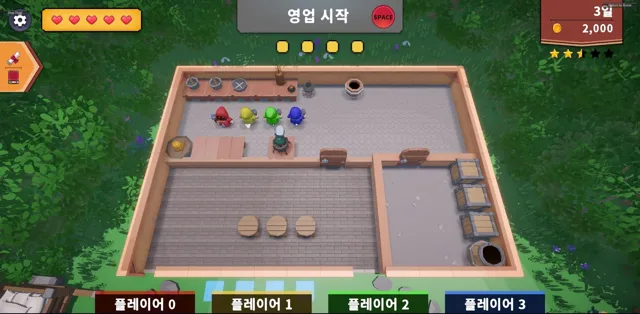